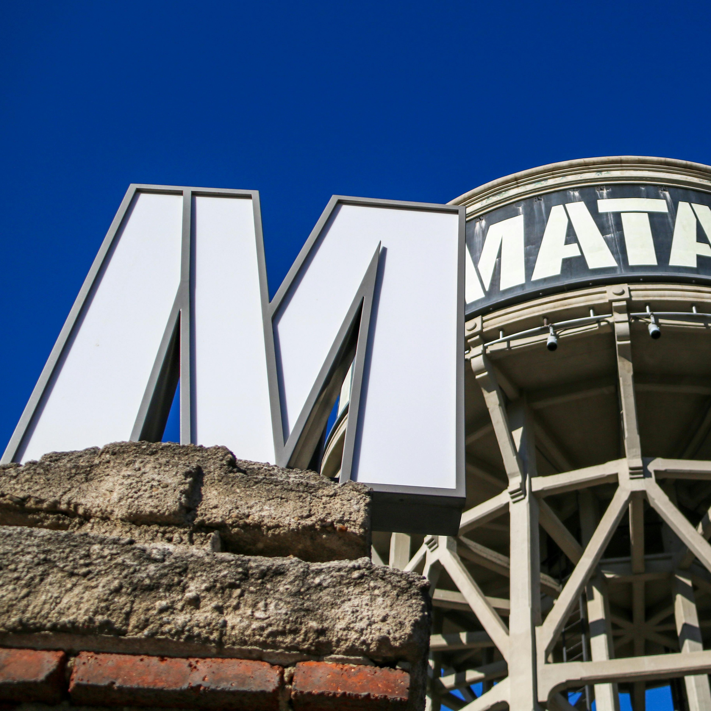
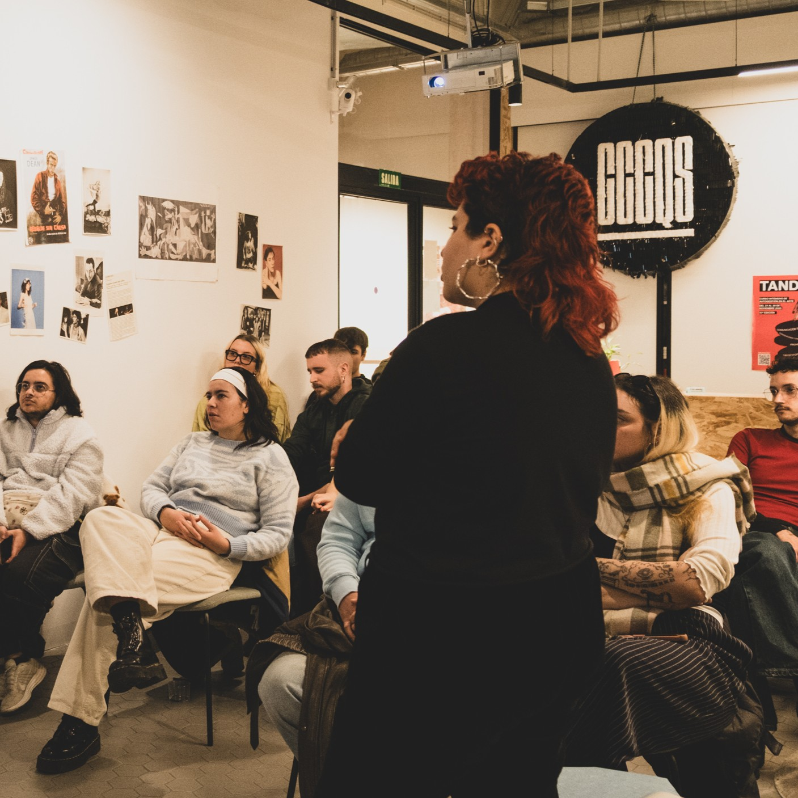
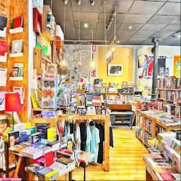
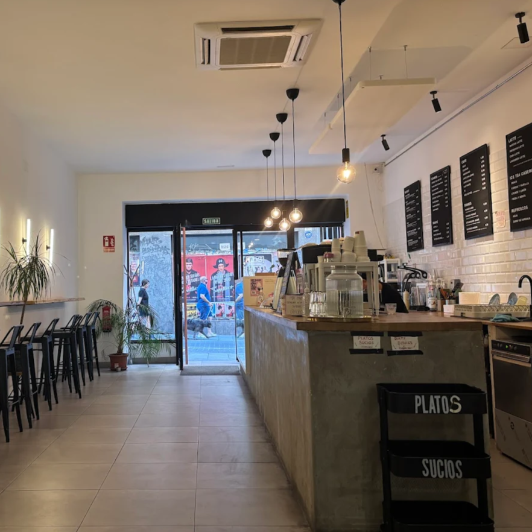
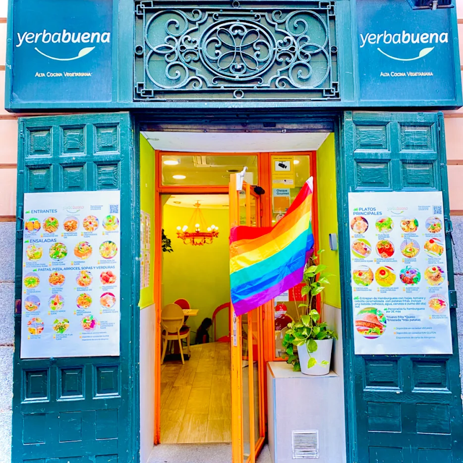
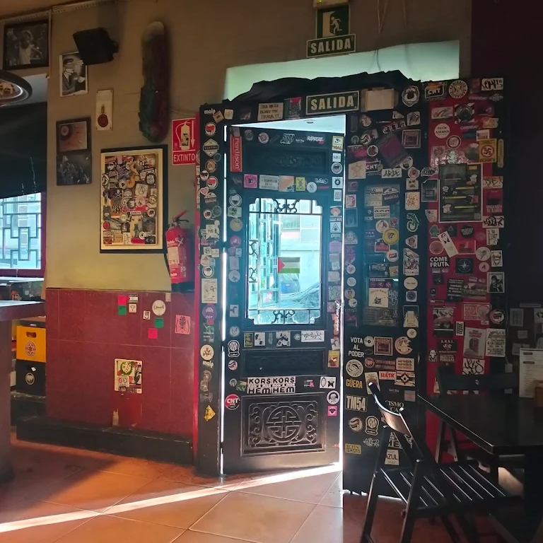
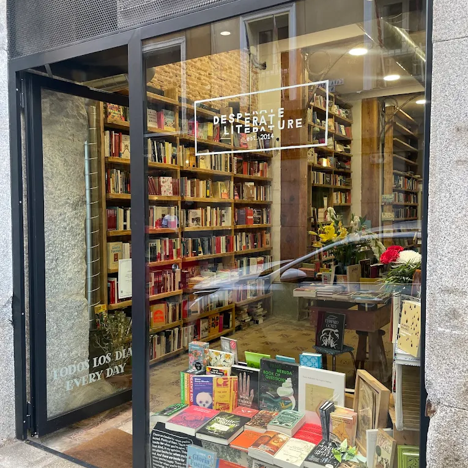
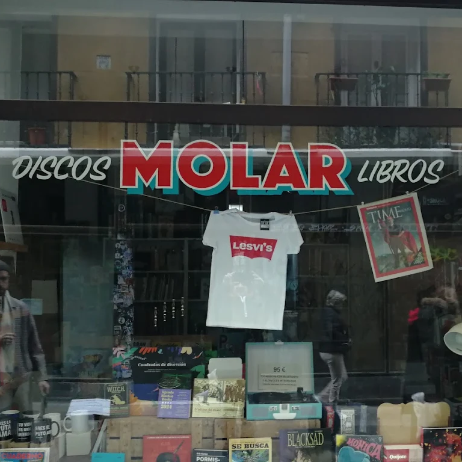
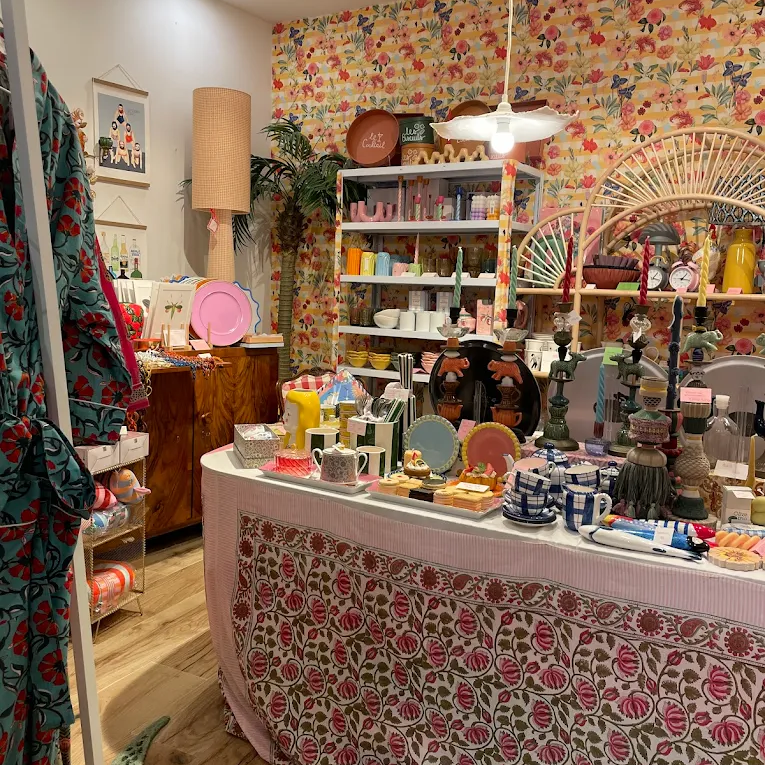

MadrizLocal
Madriz Local presenta una alternativa de la ciudad centrada en lo local de verdad que ayuda al desarrollo de proyectos independientes y autogestionados por la comunidad.
Desde Madriz Local nos posicionamos activamente contra la gentrificación sin sacrificar el ocio, enfocando nuestro proyecto de una manera consciente con lo local, quienes lo habitan y su entorno.
Cultura
Desde Madriz Local estamos comprometides con la preservación de espacios culturales alternativos en esta ciudad en la que grandes instituciones monopolizan su acceso.
A continuación se presentan oportunidades de verse inmerse en la cultura madrileña a nivel local.
MATADERO MADRID
Matadero Madrid es un complejo arquitectónico reformado en el que se realizan todo tipo de actividades artísticas destacando proyecciones de cine, performance e instalaciones artísticas.
Web
CCC LA QUINTA DEL SORDO
A través del reconocimiento del valor artístico independiente el Centro de Creación Contemporánea Quinta del Sordo ofrece el espacio para la realización de actividades culturales como charlas, exposiciones o ferias.
Web
SWINTON & GRANT
Dos espacios en uno, librería especialmente seleccionada y galería de arte contemporáneo. Galería Swinton y Librería Grant ofrecen un programa cultural que refleja la necesidad de expresión social.
Web
Gastro
Con producto de proximidad, precios populares, espacios seguros y vegan friendly, en resumen sitios chulos para disfrutar.
Estos sitios son los favoritos del equipo de Madriz Local.
DELISH VEGAN DONUTS
En plena Malasaña se encuentra Delish Vegan Donuts un local especializado en rosquillas veganas entre otros dulces. Destacan sus sabores experimentales y de temporada.
Web
YERBABUENA
Con platos tradicionales íntegramente vegetarianos con amplias opciones veganas Yerbabuena ofrece cantidad y calidad en un espacio relajado en Madriz Centro.
Web
LOUKANITOS
Taberna de barrio entre Embajadores y Lavapiés con precios populares, opciones vegetales, bastante punk e íntegramente antifascista.
Web
Comercio
Comercios de Madriz que roban el corazón, de esos en los que te atienden con mimo, comercio ético,fuera de las grandes multinacionales que colonizan las calles.
Ideal para intentar consumir más éticamente en este capitalismo arrasante.
DESPERATE LITERATURE
Librería especializada en libros en ingles con opciones en castellano y francés para todos los niveles y foco en editoriales pequeñas y experimentales. Un fondo buítre les echó de su local de siempre, en el actual actual han realizado una conservación de los elementos históricos del edificio.
Web
MOLAR RECORDS
En el Molar se pueden encontrar joyas musicales en vinilo, fanzines varios y una gran selección de narrativa, ensayo y novela gráfica junto a un tablón en el que se anuncian eventos creativos y musicales indie de la zona.
Web
LAS 3 DE PIAMONTE
bastante punk e íntegramente antifascista.
Web